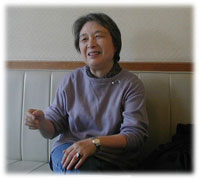

|
■「職業をもって生きていきたい」
「ドキュメンタリー映画と出会うまで、いろいろな仕事をしました。しかも、1年くらいずつで、職を変わっているんですよ。何が自分にできるか、一生けん命勉強しながらやっていたのに、なかなかにフィットする仕事にはめぐり逢わなかったのです。戦後の大変な時期、しかも引き揚げということもあって、あっちへ行ったり、こっちへ行ったり」
そう、羽田澄子さんは旧満州、大連市生まれ。途中数年内地で暮らしたが、この地で女学校を終えている。その後、東京の自由学園に入学。終戦の年、卒業と同時に大連にもどり、3年近くソ連軍の占領のもと、日本人社会で、唯一ゆるされた組織「大連日本人労働組合」で、婦人部の仕事をした。1948年、第2次の引き揚げで帰国。
当時国会議事堂のそばにあったGHQのチャペルセンターに職をみつけて東京に出る。この年、母校自由学園の羽仁節子先生から、岩波書店がはじめようとしている科学映画や教育映画の仕事に参加してはどうか、と誘われたとき、「あまり関心がありません」と断った。
「当時、映画の世界は遠く眩しく、私にとっては想像もできない世界だったんです。いまになって思えば、大きな人生の転機だったんだけれど、あのときはなんとも思ってなかった……」
■岩波映画との出会い
「あまり関心がありません」で、話が終わっていたら、いまの羽田さんはないことになるが、映画に関心がないなら、と本の編集をすすめられ、岩波写真文庫をつくる仕事についた。名物編集長・名取洋之助氏のもとで、ものをつくる仕事、写真について徹底的に仕込まれた。2年後、羽仁進氏の助手として、ドキュメンタリー映画の世界に足を踏み入れることになる。
「岩波映画の仕事っていうのは、いってみれば商品なんですよね。スポンサーの意に添うものをつくる。それでも私はけっこう自分のつくりたいようにつくっていたので、抵抗もなく、欲求不満というのも、長い間感じなかったのです。私の発想が、だんだん変わってきたときに、スポンサーとの間に摩擦が生じたわけです。『法隆寺献納宝物』撮影のとき、すったもんだの大騒ぎになりました。スポンサーが『おもしろくなくてもいいから、ちゃんと解説的に映画をつくってくれ』と言う。おもしろくなくてもいい映画をつくるなんて、二度といやだと思いました」
映画『狂言』を撮ったとき、訪れた岐阜県根尾村の能郷という村で、樹齢1400年の桜の古木に出会う。
「この不思議な桜の樹一本で十五分くらいの音楽のような映画をつくれる」ふとそう思った。ほんとうにこのときは「ふと」思っただけだったのだ。（『映画と私』より）

■新しい道――独立
『薄墨の桜』を仕上げたとき、私は自分の前にいままで見えなかった途が開けているのを感じるようになっていた。「自分のつくりたいものを、つくりたいようにつくる途」である。（『映画と私』より）
「自分でつくりたいものを、つくりたいようにつくるというは、自分で発想して、自分で判断しなければならないということ。どこを見ても、誰も『これでいい』とは言ってくれない……。自分の作品をつくるって自問自答の作業なんだなあ、と思いましたね。それともうひとつ。つくる苦労と見せる苦労。その両方があって完結するのが映画づくりなんだと、思い知らされました。『薄墨の桜』は、私の周辺で映画をつくっていた人や、いわゆる文化映画の評論家たちにはキョトンとされたんですよ。反応なし。『君ね、ああいう映画を人に見せるものじゃないよ』と言われたこともありました。多くの人が私と目を合わさず、逃げてしまった。ところが、一般の上映がはじまってみると、びっくりするほどたくさんの人で、ホールがいっぱいになりました」
その後、羽田さんは今日まで自分の途を歩みつづけてきたが、『薄墨の桜』以後、その傍らにはいつも、羽田作品をプロデュースした夫の工藤充氏（自由工房主宰）の存在がある。
「1959年に結婚するとき、工藤は『決して君の仕事の邪魔はしない』と言ってくれたのよ」
と羽田さんは言う。
「なんと、うらやましい」と思いかけて、はっと気づく。それは羽田さんの仕事と、前向きな生き方に対して発せられたことばなのだ。うらやましがっている場合ではない。
■「元始、女性は太陽であった」
現在、東京の岩波ホールで、羽田澄子監督作品『元始、女性は太陽であった――平塚らいてうの生涯』が公開上映されている。この映画を観て、筆者は久しぶりに「おもしろい」とはこういうことだったと感じた。らいてうを、知っているつもりで、実のところ、その生きる姿には少しも届かずにいたことを恥じながら、初めてらいてうに出会う喜びに包まれた。なんという生真面目、正直、清らかな人であることか。そして、その静かな行動力が、戦後の平和運動に結実した。
この映画のパンフレットに瀬戸内寂聴氏（「平塚らいてうの記録映画をつくる会」のメンバーでもある）がつぎのように書いている。
けれども羽田さんの、何のてらいもない、あるがままのらいてうのドキュメント映画を見せてもらい、後半生に至って涙がこみあげてきたのだった。（中略）
やはりらいてうは、太陽の女性であり、真正の人であった。そして羽田澄子監督の小さな70を超えた体にこの映画を撮る情熱の火がついたのは、らいてうのの灯した火種を受けたものだということに深い感動を覚えた。羽田さんこそはらいてうの精神的種族としての申し子であった。
らいてうの「精神的種族としての申し子」とは、何とふさわしい呼び名だろう。しかし、羽田さんはそんなふうに呼ばれても、きっと「あら」とか、「まあ」とか言うのだろう。あくまで控えめで、自然体なひとである。
「ときどき、先見の明があるとほめていただくことがあって、面食らってしまうのよね。たとえば『痴呆性老人の世界』のときには、生き物としての人間の姿、老いをみつめていたのでした。社会問題なんてことはまるで思わなかった。映画ができ上がったときの反響が思いもかけないものだったから、それで初めて日本の『高齢化社会』に目を向けることになりました。そして『安心して老いるために』をつくったのです。映画をつくっては、自分でびっくりし、びっくりしてまたつくり、それをくり返して、あとで見ると、つながりが生まれているというふうでね（笑）」
思ったこと、考えたことに率直に、正直に対応するのが羽田澄子さんの生き方だ。
その労作は、これからもつづき、いつまでも咲く。
|